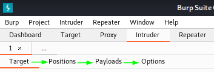
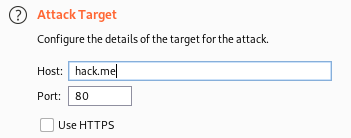
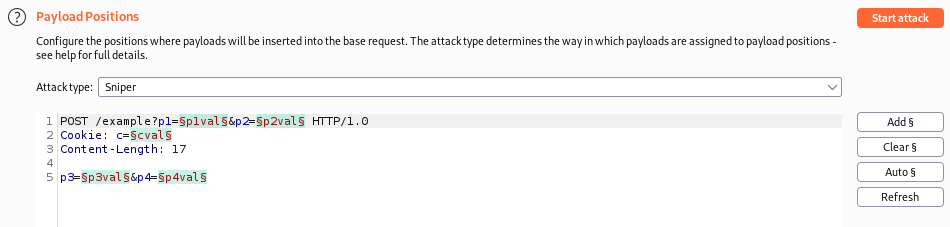
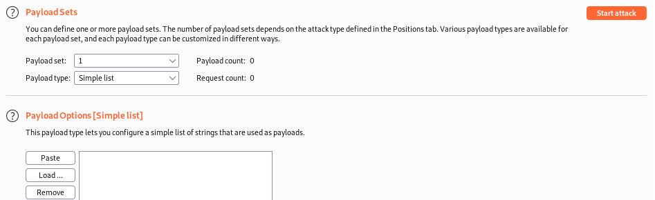
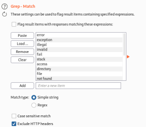
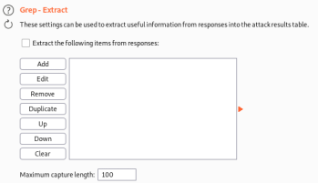
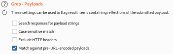

Intruder
Intruders' simple workflow consists of moving from Target → Positions → Payloads → Options
• Target: select the target, very easy. unless we are sending the requests to a different site from the original request, it this case we have to tweaking it
•
Positions: allows us to highlight one or more elements of the Request header or body that will be systematically replaced.
• Payloads: is where we define what will be injected into those
Positions • Options:
One of the main option is Grep, simple way to automatically identifying relevant information in the results of the Intruder run
◇ match
 ◇ extract
 ◇ payloads
